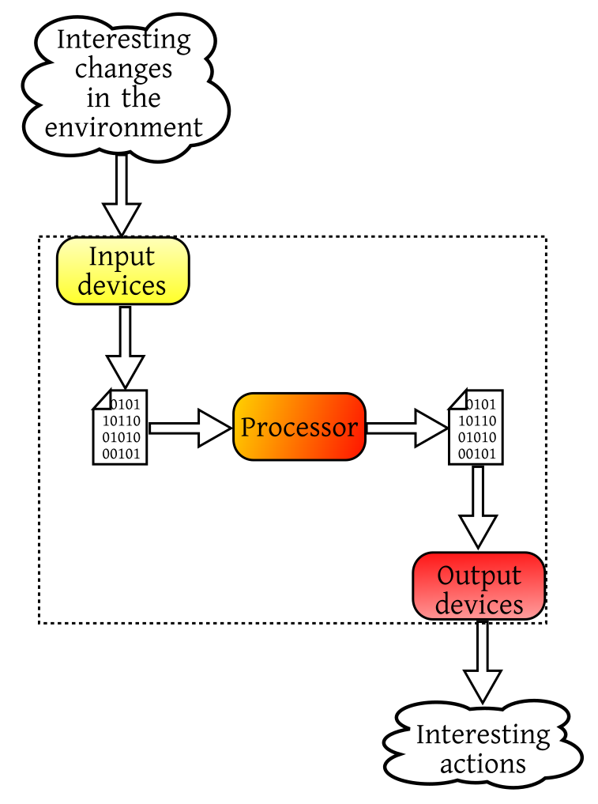

What makes a computer most useful? A strong CPU? Multiple
cores? Lots of RAM? While these indeed make the computer run
faster or handle larger data sets, but these are not the main component behind a computer
being useful. The usefullness of a computer lies in how many
peripheral devices are connected to it. A computer, in it barest
essentials, is just a machine that processes 0's and 1's to
produce more 0's and 1's.
This, by itself, is quite useless. It becomes useful
only when
interesting things are converted into the binary input for
the computer, and the output binary is converted back into
interesting things. These two conversions are done by devices connected to the computer.

From a user's perspective the entire bundle consisting of the input and output devices and the processor is called a computer
(enclosed in the dashed box).
Out of all the computers that we generally use everyday, the one
with the maximum number of peripherals attached to it is our
mobile phone. Little wonder it plays a more important role in
our life than laptops and desktops.
Yet it is a pity that even the programmers among us often are
quite ignorant about writing a program for an Android phone. When
we think of programs running on our phones, we generally think of
the apps typically available from the Google Playstore.
These apps are written by experts
to cater to general needs. I am talking about writing a little
simple program that we can run on our own phone to serve
some little personal purpose. You cannot (and should not) get
such private apps from the web because:
You cannot expect someone to create an app for your specific personal
needs!
Your mobile phone is directly connected to various essential services like banks and email account. So you must
be careful about which apps you allow to run in your phone. Indeed, app stores like Google play
already enforce stringent checks, that will not let those apps access many of the useful devices
in ways they consider dubious. Yet these dubious uses are often precisely what you would like to use. You can
only trust yourself with those "dubious" uses.
App stores usually force you to consider your phone as a consumer item, and leave its
computing potential mostly unused.
So there is a world to explore here. However, it is a world that
Google apparently does not want you to explore. So the
necessary steps and resources are kept shrouded in mystery, and every
now and then Google makes the process more complex, and threatens
to smother the creating individuals trying to program their own
phones.
After tinkering with app programming for a few years, I have learned that the basic process is quite straightforward and
accessible to any programmer. But the basic details are covered up under three layers:
keeping various tools in the web (and changing the URLs from time to time)
Using poorly documented tools into which the mysterious URLs are hardcoded (and which are
updated everytime google chages the URLs)
Covering all the details under a beast of an IDE called AndroidStudio, which forces you to
follow an extremely complex and ill-documented path even when you want to create a simple app.
I had started with AndroidStudio, and found that simple things could not be done simply. Even for
a simple Hellow World program, you need to download tons of things that I could not make sense
of. When I wanted to make a minor change to the same program a few months later, I was told that
new versions are available for various components, and despite my efforts to avoid upgrading (I
was in a hurry, and the change was minor), I found AndroidStudio downloading a lot more things,
and fnally complaining that my original program cannot work any more!
I started looking for alternatives to AndroidStudio, found none. I tried to learn the working of
AndroidStudio, and learned about something called Gradle, and tried to learn Gradle (already its
use for Android app development is poorly documented), and I was sent deeper into a jungle of
confusion. Frantic searches in various forums only showed me that I was not alone, and after
wasting a lot of time in this jungle, most people conclude that AndroidStudio is after all good,
as it saves us from this jungle.
Frustrated with this, I resolved to explore the murky depths. Beyond Android Stdio, beyond
gradle, beyond Android Studio plugin (whatever that is), and you know what, deep inside
everything is simple and, even for a moderately experienced programer, quite intuitive, too!
And it is this that I want to share with you in this tutorial.
By the way, some of you may have heard the term "rooting" or "jailbreaking" a
phone. These are risky manouvres that will void your warranty and
possibly ruin your device. I am not talking about these
here. I am talking about programming an app for your own phone
for personal use in a legal and high level way using Java.